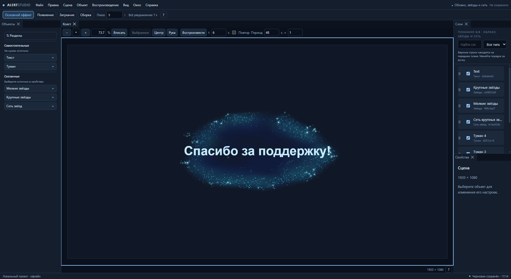

Слои, которые работают вместе
Соединяйте туман, мелкие и крупные звёзды, сеть и текст. Управляйте источниками и собирайте собственный вид.
ВАША КОМПОЗИЦИЯ. ВАШ СТИЛЬ.
Текст, туман, звёзды и световые связи — в одном редакторе. Настраивайте слои, смотрите результат и сохраняйте кадры с прозрачностью.
PORTABLE / v0.2.1
ALERTSTUDIO / ВОЗМОЖНОСТИ
Собирайте композицию, настраивайте эффекты и сохраняйте результат.
Соединяйте туман, мелкие и крупные звёзды, сеть и текст. Управляйте источниками и собирайте собственный вид.
Перемещайте панели, открывайте отдельные окна, приближайте холст. Lock, Solo, поиск и история помогают править точнее.
Основной эффект, появление, затухание и сборка. Задайте длительность и плавную прозрачность всей композиции.
Экспортируйте PNG с альфа-каналом. Программа и данные остаются в вашей папке — её можно перенести на другой диск.
ALERTSTUDIO / НАЧАЛО
Готовую версию для Windows x64. Node.js, pnpm и сборка исходников не нужны.
Выберите папку с правом записи и запустите AlertStudio.exe.
Начните со сцены-примера. Проекты по умолчанию сохраняются в Data/Projects.
Для переноса закройте программу и переместите всю папку вместе с Data. Файлы, сохранённые снаружи, перенесите отдельно.
Это развивающийся редактор. PNG и базовые стадии работают; WebM, звук, ключевые кадры и расширенная анимация ещё в плане. Отдельной подписи издателя AlertStudio пока нет — Windows может показать предупреждение. Проверка на другом физическом компьютере не проводилась.
Скачайте готовую программу и начните со сцены-примера.